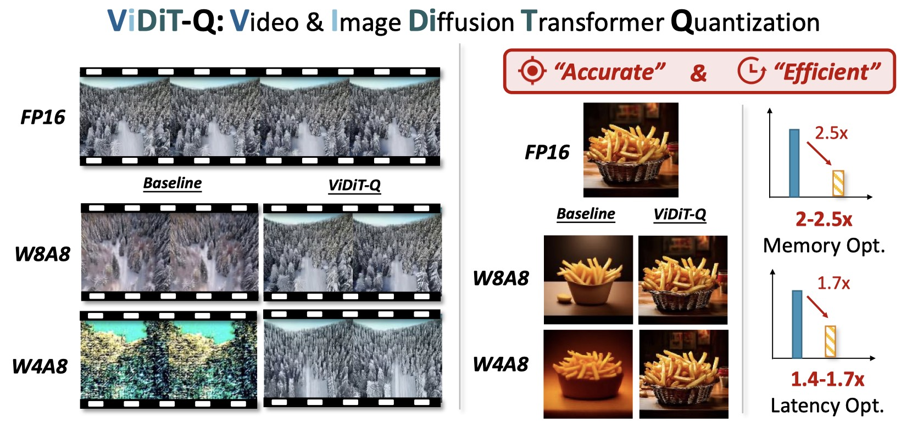
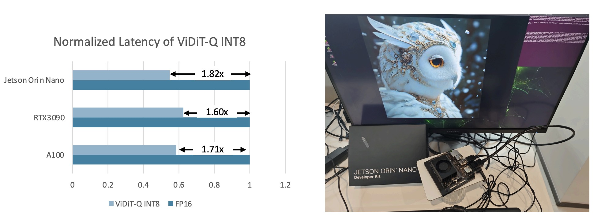

We introduce ViDiT-Q, a quantization method specialized for diffusion transformers. For popular large-scale models (e.g., open-sora, Latte, Pixart-α, Pixart-Σ) for the video and image generation task, ViDiT-Q could achieve W8A8 quantization without metric degradation, and W4A8 without notable visual quality degradation.
We implement efficient fused INT8 CUDA kernels (refer to https://github.com/thu-nics/ViDiT-Q/tree/viditq/kernels for more details) for ViDiT-Q to achieve practical hardware resource savings on GPUs. The optimized ViDiT-Q pipeline could achieve 2x memory savings, and 1.6-1.8x latency speedup across various GPU platforms.
Diffusion transformers (DiTs) have demonstrated remarkable performance in visual generation tasks, such as generating realistic images or videos based on textual instructions. However, larger model sizes and multi-frame processing for video generation lead to increased computational and memory costs, posing challenges for practical deployment on edge devices. Post-Training Quantization (PTQ) is an effective method for reducing memory costs and computational complexity.
When quantizing diffusion transformers, we find that existing quantization methods face challenges when applied to text-to-image and video tasks. To address these challenges, we begin by systematically analyzing the source of quantization error and conclude with the unique challenges posed by DiT quantization.
Accordingly, we design an improved quantization scheme: ViDiT-Q (Video & Image Diffusion Transformer Quantization), tailored specifically for DiT models. We validate the effectiveness of ViDiT-Q across a variety of text-to-image and video models, achieving W8A8 and W4A8 with negligible degradation in visual quality and metrics. Additionally, we implement efficient GPU kernels to achieve practical 2-2.5x memory saving and a 1.4-1.7x end-to-end latency speedup.
We conduct preliminary experiments to delve into the reasons for quantization failure by visualizing the data distribution. We conclude the key unique challenge of DiT quantization lies in the data variation in multiple levels. While existing quantization methods adopt fixed and coarse-grained quantization parameters, which struggle to handle highly variant data. We summarize the data variance in 4 following levels:
The video generation should be evaluated from multiple aspects (e.g., the visual quality, the temporal consistency, the text video alignment and so on.). Similarly, quantization have unique effects on these aspects, these influence should be taken into account when designing quantization method. The traditional naive MSE-based quantization error does not sufficiently estimate the quantization's effect on video generation quality.
To address the aforementioned challenges, we design an improved quantization scheme ViDiT-Q, which provides corresponding solutions: (1) Adopt the fine-grained and dynamic quantization parameters to address the token-level, timestep-level, and condition-level variation. (2) Static-Dynamic Channel Balancing technique to address the time varying channel variation. (3) Metric decoupled mixed precision to estimate the quantization's effect on multiple aspects of generation.
The choice of quantization parameter is vital for both the algorithm performance and hardware efficiency of quantization. The arising question is "How to properly choose the quantization parameters?" As seen from the figure below (we use the linear layer computation as an example), the criterion for the quantization parameter granularity is that "the elements that are summed together should share quantization parameters". In which case, the integer multiplication and add could be executed together instead of firstly "dequant" back to FP to perform aggregation.
The primary distinction between the DiT and previous U-Net-based models are the feature extraction operator (Convolution vs. Linear). U-Net employs convolution layers that conducts local aggregation of neighboring pixel featrues, therefore, the activation should share the same quantization parameters (tensor-wise quantization parameter). However, For DiTs's linear layers, the computation for each visual token is independent. Therefore, for activation of linear layers, the fine-grained token-wise quantization parameter is applicable.
Also, for the simple minmax quantization scheme, the estimation of quantization parameters only involves measuring the minimum and maximum value of certain data, which only involves negligible overhead. We also demonstrate as below, using dynamic quantization parameters achieves similar hardware efficiency compared with the static ones (1.71x vs. 1.74x). Meanwhile, adopting dynamic quantization parameters could naturally resolves the dynamic data variation problem, which significantly improves the algorithm performance.
The channel balancing problem is also witnessed in prior large language model (LLMs), and a series of existing research explores unique quantization techniques to address the channel imbalance. Among them, the "scaling-based" (e.g., SmoothQuant, AWQ) and "rotation-based" (e.g., QuaRot) methods are two effective ways. For DiT models, the channel imbalance issue has a unique "time varying" characteristic, which both the location and the magnitude of the outlier channels varies across timesteps. Existing channel balance techniques struggle to handle such unique problem.
We delve into the underlying reason for the time varying channel imbalance phenomenon, and discover that this imbalance could be decoupled into 2 parts. The "static" channel imbalance with the trained "time_shift_table", and the "dynamic" part introduce by time embedding. Enlightened by such finding, we propose to combine the merits of existing scheme, and design a "static-dynamic" channel balance technique.
For lower bit-width quantization, we discover that degradation is still witnessed for ViDiT-Q. We discover that the quantization is "bottlenecked" by some layer (unquantizing one layer improves from blank image to readable content).
An intuitive solution for highly sensitive layers is assigning higher bit-width for them. We observe that simple Mean-Squared-Error(MSE)-based quantiation sensitivity measurement lacks precision. We introduce an improved metric-decoupled sensitivity analysis method that considers quantization's influence on multiple aspects.
VBench is a comprehensive benchmark suite for video generation. We evaluate the quantized model's generation quality from various perspective as follows.
ViDiT-Q W8A8 quantization achieves comparable performance with the FP16. W4A8-MP quantiation only incurs notable performance decay, outtperforming the baseline W8A8 quantization.
We provide some qualitative video examples as follows:
We apply ViDiT-Q to the open-sora and Latte models on UCF-101 datasets.
We compare existing quantization techniques for open-sora model on its example prompts.
We apply ViDiT-Q to the PixArt-α and PixArt-Σ models on the COCO annotations.
We conduct ablation studies for open-sora text-to-video generation for W4A8 quantization.
@misc{zhao2024viditq,
title={ViDiT-Q: Efficient and Accurate Quantization of Diffusion Transformers for Image and Video Generation},
author={Tianchen Zhao and Tongcheng Fang and Enshu Liu and Wan Rui and Widyadewi Soedarmadji and Shiyao Li and Zinan Lin and Guohao Dai and Shengen Yan and Huazhong Yang and Xuefei Ning and Yu Wang},
year={2024},
eprint={2406.02540},
archivePrefix={arXiv},
primaryClass={cs.CV}
}